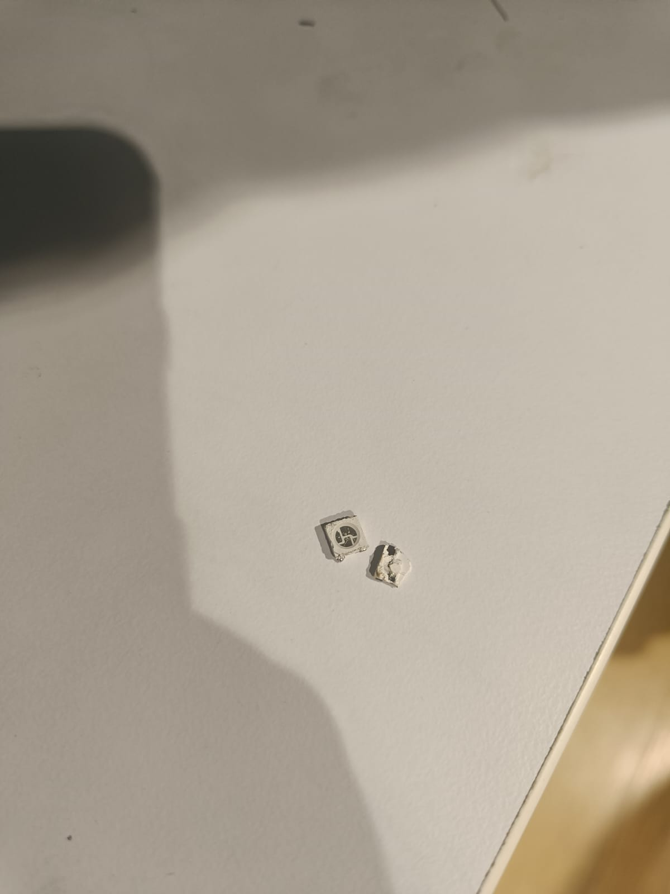

Week - 9 : Output Devices
| Assignment | |
| group | measure the power consumption of an output device link |
| individual | add an output device to a microcontroller board you’ve designed, and program it to do something |
PCB with SAMD11C ¶
First, I revised the pin layout provided by the producer.

I prepared the schematic design reviewing Samdino . I started preparing my first board design using KiCAD.

The design was prepared using default Design Rules and passed Design Rules Checker. The following parameters were shared by our instructor.

The design of the board is presented below. I designed a compact board with the measurement of 32 mm X 40 mm.

For integrating the C-type connector I used a proshplay board for which the footprint was shared with us by our instructor.
Super Fablab Kerala has designed a tool named Gerber to PNG which helps us to get a PNG file of traces and outline that can be milled using Roland MDX PCB Mill. Here’s a screenshot of the same.

When the gerber files were uploaded, we got the png files for traces and outline as follows:

I milled my PCB and soldered all the components mentioned in the list.


The power consumption measured with method described:
- the higher rotation speed - more power consumption
- Power (Watts) = Voltage (Volts) x Current (Amps)
- Nema 17
|
Without
Motor |
With
Motor |
With
Load |
|
I =
0.20554 A |
I =
0.302254 A |
I =
0.79 A |
|
V =
12.001 V |
V =
12.001 V |
V =
12.001 V |
| Output Type | Sensor |
| digital (discrete) | Alarms, Control relays, Fans, lights, horns, valves, Motor starters, solenoids |
| analog (contiunous) | any? |

Output devices ¶
The WS2812B LED is a highly versatile and popular RGB (Red, Green, Blue) LED used in a wide array of lighting projects and products due to its simplicity of control and vibrant color output. Each WS2812B LED contains an integrated control circuit that allows it to be controlled with a single data line, making it possible to connect multiple LEDs in a series (daisy-chained) and control each one individually. This makes the WS2812B ideal for creating intricate lighting effects with a minimal number of pins from a microcontroller.
Features of the WS2812B:
- Integrated Control Circuit: Each LED has a built-in microcontroller.
- RGB Color Mixing: Capable of displaying 16 million colors by mixing red, green, and blue.
- Serial Interface: Control multiple LEDs using a single digital pin.
- Addressable: Each LED can be controlled independently.
- 5V Operating Voltage: Commonly operates at 5V, making it compatible with many microcontrollers like Arduino.
- High Brightness: Each of the RGB components can be adjusted for brightness.
Steps to Use WS2812B in a Circuit:
Materials Required:
- WS2812B LED strip or individual LEDs
- Microcontroller (e.g., Arduino)
- Power supply (5V)
- Capacitor (1000 µF, 6.3V or higher)
- Resistor (300-500 Ohms)
Step 1: Wiring
- Power the LED(s): Connect the 5V and GND pins of the WS2812B to the 5V and GND output of the power supply, respectively.
- Add a Capacitor: Place a capacitor across the 5V and GND terminals of the power supply to prevent any sudden surges that could damage the LEDs. I added 100nF capacitor to my design.
- Data Line Connection: Connect a resistor in series with the data input pin of the first WS2812B LED to your microcontroller's digital output pin. This resistor helps to prevent spikes on the data line.
- Chain LEDs (if applicable): If using multiple LEDs, connect the data output of the first LED to the data input of the next, and so on.

Schematic for the LED Board:

PCB Design for the LED Board:

Step 2: Setup the Microcontroller
- Install Libraries: For Arduino, install the FastLED or Adafruit NeoPixel library through the Library Manager.
- Initialize the LED(s): In your code, declare the number of LEDs, select the pin connected to the data line, and set the type of LEDs (e.g., WS2812B).
I used the board I designed using Samd11C.

Step 3: Programming
-
Configure LED Settings:
Use the library functions to set colors and brightness. For example, with the FastLED library, you can use
leds[i] = CRGB(r, g, b);to set the color of LED 'i'.
- Display Patterns: Write functions to create patterns, animations, or respond to sensor inputs.
-
Update the Display:
Use a function like
FastLED.show();orstrip.show();to update the LEDs with the new color data.
To program individual WS2812B LEDs using an Arduino (or compatible board like the Samdino11C), you will typically use a library like Adafruit NeoPixel. This library makes it easy to control individual LEDs on a strip, including WS2812B LEDs, by sending precise pulses of data from a microcontroller pin. Since you're using a SAMD21-based board (as implied by "Samdino11C"), the Adafruit NeoPixel library should work well for this task.
First, you need to ensure you have the Adafruit NeoPixel library installed. You can do this from the Arduino IDE by going to Sketch > Include Library > Manage Libraries... , then searching for "Adafruit NeoPixel" and installing it.
Here's the sketch for testing the LEDs:
#include <Adafruit_NeoPixel.h>
#define LED_PIN 15
#define NUM_LEDS 3
Adafruit_NeoPixel strip(NUM_LEDS, LED_PIN, NEO_GRB + NEO_KHZ800);
void setup() {
strip.begin(); // Initialize the NeoPixel library.
strip.show(); // Initialize all pixels to 'off'.
}
void loop() {
// Color the first LED red.
strip.setPixelColor(0, strip.Color(255, 0, 0)); // Red color.
// Color the second LED green.
strip.setPixelColor(1, strip.Color(0, 255, 0)); // Green color.
// Color the third LED blue.
strip.setPixelColor(2, strip.Color(0, 0, 255)); // Blue color.
strip.show(); // Update the strip with new settings.
delay(1000); // Pause for a moment before cycling colors.
// Simple color cycle for demonstration.
for(int i = 0; i < NUM_LEDS; i++) {
for(int j = 0; j < 255; j++) {
strip.setPixelColor(i, strip.Color(j, 255-j, j/2));
strip.show();
delay(5);
}
}
}

Step 4: Power Considerations
- Ensure your power supply can handle the current draw, especially if using many LEDs. Each LED can draw up to 60 mA when set to full brightness white.
- For large installations, inject power at multiple points to prevent voltage drop.
Step 5: Safety and Testing
- Test your circuit with a few LEDs before connecting a large number.
- Check for any heating issues in the microcontroller or the power supply.
- I made a major mistake by trying to solder the LED using the SMD reworking tool and because of the temperature sensitivity of the LED I ended up damaging the LED. Hence, I recommend everyone to be careful about the temperature while using this LED. 